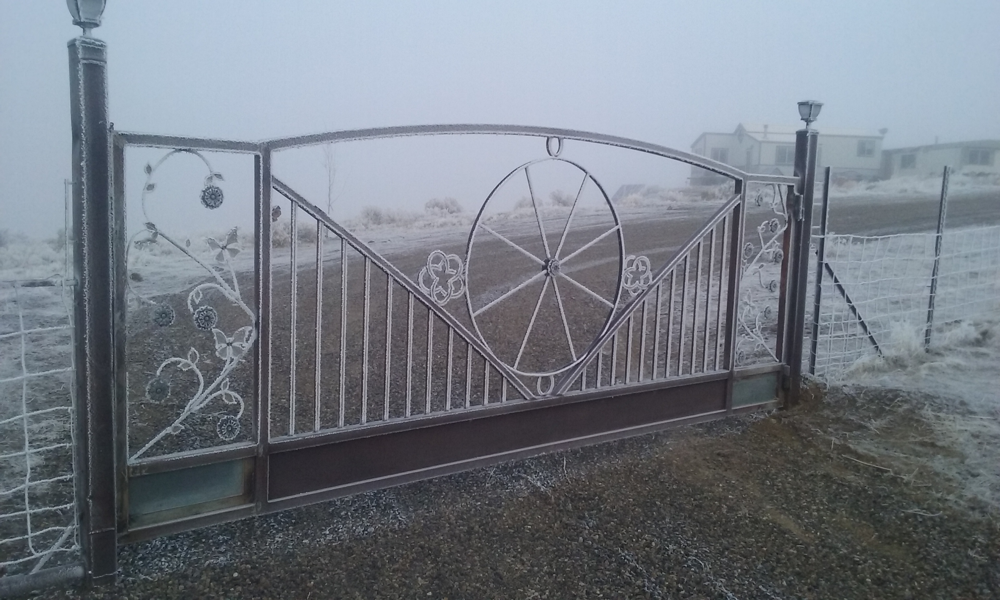

Materials Used: Hand-forged steel, decorative wrought iron, and powder-coated finish.
Design Features: Custom sunflower centerpiece symbolizing warmth and renewal; circular and linear patterns integrated for strength and symmetry.
Build Time: Approximately 3 weeks from concept to installation.
Notes: Designed to complement the surrounding landscape and withstand harsh winter conditions while showcasing artistic craftsmanship.

Title: "Wagon Wheel Gate"
Built by: Crane Fab
Location: Elko Nevada
Completion Date: Winter 2021
Materials Used: Hand-welded steel tubing, solid bar, and decorative wrought iron elements.
Design Features: A custom single-swing gate centered around a wagon wheel motif symbolizing strength and heritage. The floral side panels add ornamental balance, while reinforced lower beams ensure long-term stability and weather resistance.
Build Time: Approximately 2½ weeks from design to installation.
Notes: This piece merges frontier inspiration with refined craftsmanship.
Title: "Arched Driveway Entrance Gate"
Built by: Crane Fab
Completion Date: Summer 2004
Materials Used: Welded steel tubing, solid bar pickets, and a custom arched top rail. Finished with exterior-grade coating for weather resistance.
Design Features: A clean and minimalist double-swing gate featuring a soft center arch and evenly spaced vertical pickets for a balanced, open view. Installed between stucco columns with integrated lighting, providing both security and aesthetic appeal at the property entrance.
Build Time: Approximately 1–2 weeks from design to installation.
Fence & Railings
Title: "Black Corner Rail"
Built by: Crane Fab
Completion Date: Spring 2020
Materials Used: Solid forged steel bar with custom wall mount plates and a matte black powder-coated finish.
Design Features: Compact wall-mounted handrail designed to fit a tight corner space. Precision bent for ergonomic grip and seamless transition around the wall angle. The custom mounting brackets feature decorative plate details for both strength and visual appeal.
Build Time: Approximately 3 days from fabrication to final install.
Title: "Entry Stair Railing"
Built by: Crane Fab
Completion Date: Summer 2019
Materials Used: Powder-coated steel tubing and solid bar stock with decorative twist inserts.
Design Features: Custom-fitted handrail system providing safety and stability along the entry stairway. Each section was precision-measured and welded to match existing concrete slopes and architectural angles. Minimalist design with subtle decorative accents for a clean, durable finish.
Build Time: Approximately 1 week from measurement to installation.
Title: "Interior Stair Railing"
Built by: Crane Fab
Completion Date: Fall 2018
Materials Used: Powder-coated steel balusters, solid bar posts, and a brass-finished handrail.
Design Features: Custom ornamental railing designed to complement the home's interior layout. Each baluster was precision-cut and spaced for uniformity, with decorative knuckle accents for added visual detail. Installed to align cleanly with the stair angle and landing transitions.
Build Time: Approximately 4–5 days from measurement to final installation.
Disclosure: Image edited only to remove non-essential items. Work remains unchanged
Decorative Ornamental Ironworks
Title: “Garden Archway Trellis”
Built by: Crane Fab
Completion Date: Summer 2020
Materials Used: Powder-coated steel tubing and flat bar, hand-formed and welded.
Design Features: Custom arched trellis designed to support climbing vines and floral growth, seamlessly connecting two rooflines. The structure combines strength with aesthetic flow, enhancing both the architecture and natural greenery.
Build Time: 2 weeks including fabrication and on-site installation.
Notes: Crafted to integrate with existing stone and timber features, the arch provides a living canopy effect.
Design Features: Handcrafted bench featuring a repeating horseshoe pattern for the seat and decorative scrollwork across the backrest. Each horseshoe was individually cleaned, shaped, and welded to achieve a uniform design while preserving natural texture.
Build Time: Approximately 1 week from material prep to final assembly.
Title: "Forged Metal Rose Trio"
Built by: Crane Fab
Completion Date: Fall 2019
Materials Used: Hand-forged steel stems, petals, and leaves; welded steel base plate; decorative butterfly accent crafted from reclaimed metal.
Design Features: A handcrafted arrangement of three steel roses, each individually heated, shaped, and layered to form natural petal contours. The stems and leaves were forged by hand for organic texture, with a heart-shaped base and a detailed butterfly accent completing the composition.
Build Time: Approximately 2–3 days of forging, assembly, and finishing.
Title: "Metal Calla Lily Display"
Built by: Crane Fab
Completion Date: Winter 2020
Materials Used: Hand-shaped steel petals and leaves, welded steel stem, enamel paint finish, and a decorative glass jar with a cork top as the base.
Design Features: A handcrafted calla lily sculpture featuring a sculpted steel bloom painted in a white enamel finish with a textured yellow spadix. The leaves and stem are shaped from steel and painted for added depth. Mounted in a repurposed decorative jar for a unique mixed-material presentation.
Build Time: Approximately 2 days including shaping, welding, and painting.
Classic Detailing/Modifications
Title: “Iron Arch”
Built by: Crane Fab
Completion Date: Summer 2020
Materials Used: Powder-coated steel tubing and flat bar, hand-formed and welded.
Design Features: Custom arched trellis designed to support climbing vines and floral growth, seamlessly connecting two rooflines. The structure combines strength with aesthetic flow, enhancing both the architecture and natural greenery.
Build Time: 2 weeks including fabrication and on-site installation.
Notes: Crafted to integrate with existing stone and timber features, the arch provides a living canopy effect.
Design Features: Handcrafted bench featuring a repeating horseshoe pattern for the seat and decorative scrollwork across the backrest. Each horseshoe was individually cleaned, shaped, and welded to achieve a uniform design while preserving natural texture.
Build Time: Approximately 1 week from material prep to final assembly.
Title: "Entry Stair Railing"
Built by: Crane Fab
Completion Date: Summer 2019
Materials Used: Powder-coated steel tubing and solid bar stock with decorative twist inserts.
Design Features: Custom-fitted handrail system providing safety and stability along the entry stairway. Each section was precision-measured and welded to match existing concrete slopes and architectural angles. Minimalist design with subtle decorative accents for a clean, durable finish.
Build Time: Approximately 1 week from measurement to installation.